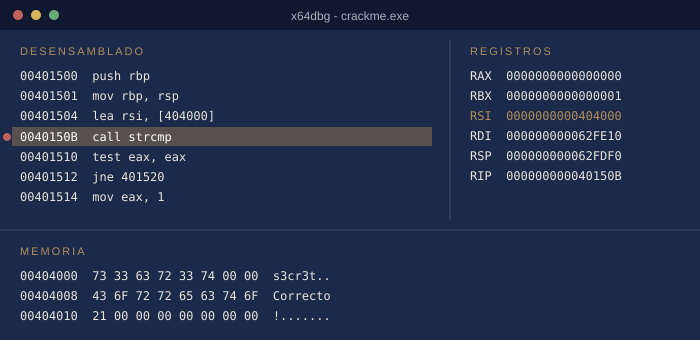
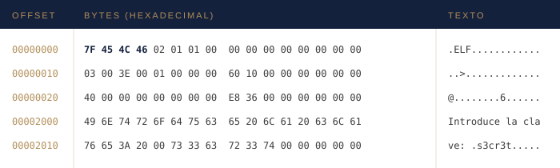

Mi viaje por la ingeniería inversa
Estas son las herramientas que forman mi "caja de herramientas" de reverser. Casi todas son gratuitas, así que cualquiera puede empezar sin gastar dinero.
Índice
Antes de analizar cualquier programa es importante preparar un entorno aislado, para que nada de lo que ejecutemos pueda dañar nuestro ordenador. Mi configuración es la siguiente:
Un desensamblador traduce el código máquina a ensamblador, y un descompilador intenta ir un paso más allá y reconstruir un código parecido a C.
| Nombre | Licencia | Sistemas | Web |
|---|---|---|---|
| Ghidra | Gratuita | Windows, Linux, macOS | Visitar |
| IDA Free | Gratuita (limitada) | Windows, Linux, macOS | Visitar |
| radare2 | Gratuita | Todos | Visitar |
| Binary Ninja | De pago | Windows, Linux, macOS | Visitar |
Mi favorita es Ghidra: fue creada por la NSA y liberada como software libre en 2019. Su descompilador es muy bueno y no cuesta nada.
Un depurador permite ejecutar un programa paso a paso, detenerlo en cualquier punto e inspeccionar su memoria y sus registros.

x64dbg detenido en una llamada a strcmp. En la memoria ya se ve la contraseña.
Un editor hexadecimal muestra el contenido de un archivo byte a byte. Es muy útil para identificar el tipo de archivo y para encontrar textos ocultos.

Los primeros bytes (7F 45 4C 46) indican que es un ejecutable ELF de Linux.
Los que yo uso son HxD en Windows y xxd en Linux.